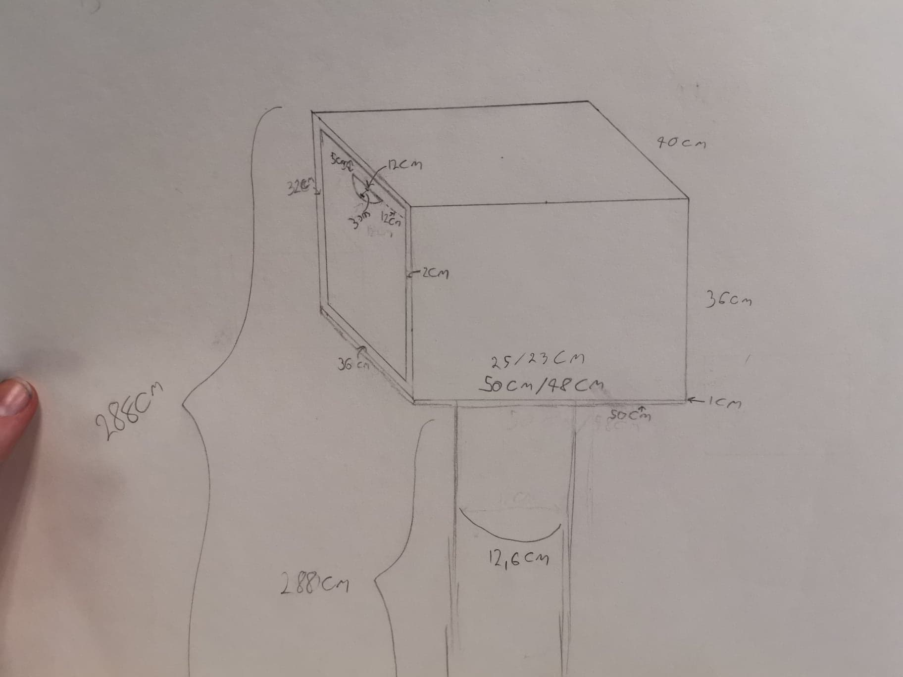

In this project I had to make a product that had dual use and on of the uses had to be
storage.
So I choose to make a staircase that includes storage in each step and as an extra feature the staires can
go
up and down.
in this project I was in charge of the design, the idea and the calulations.
Process of the product. My first idear was to have the steps on strings but that had to many issuse, so I quickly changed it to hydrolic steps. That way the steps would be complety hidden. Each step/storage is made of bamboo to make it more sustainable. The last picture is the step seen from all angles.
